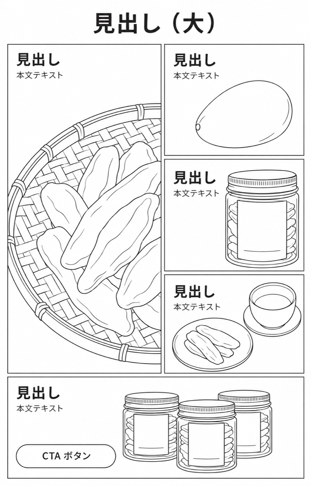
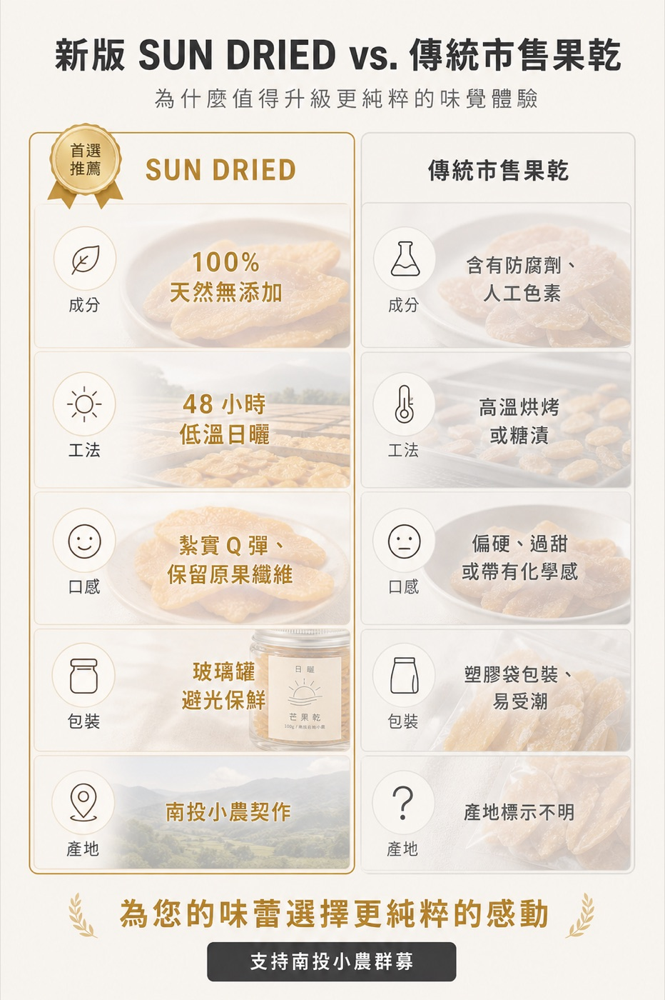
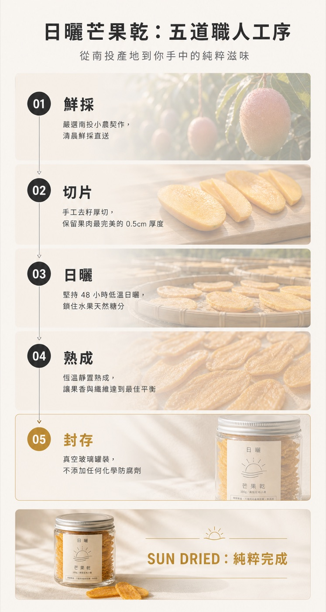
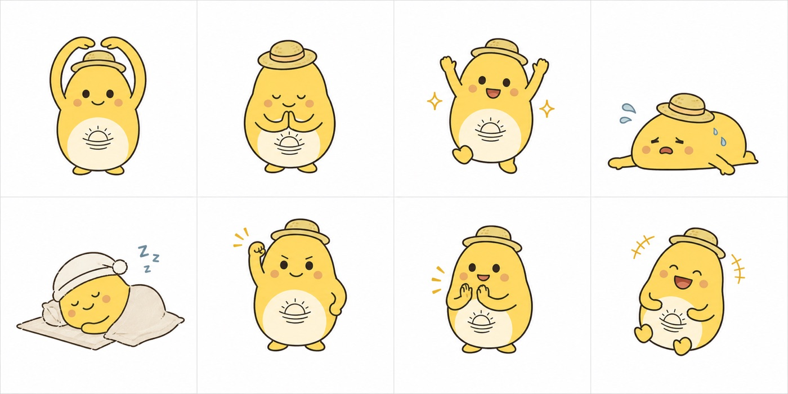
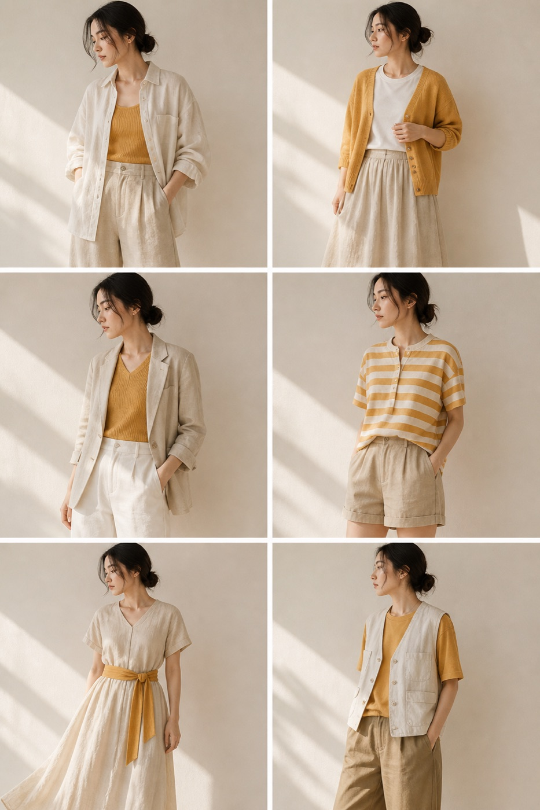

本簡報以 16:9 橫向為主
請旋轉手機
或改用平板 / 桌機觀看
兩小時，把一個社群主題做成可生成、可修改、可發布的兩張圖。
老闆丟來一個芒果乾品牌， 要你明天在 IG 發一張圖。
你打開生圖工具，輸入「幫我做一張好看的芒果乾貼文」。
出來的圖可能很漂亮，但它是你要的那一張嗎？
最後交出 1080×1350（4:5）主視覺與 1080×1080（1:1）延展圖，並且說得出每個決定的理由。
這五條是最後驗收的標準。開課先講，學員做每一步時都知道自己在往哪裡走。
後面的版型、提示詞與檢核，都會回頭對照這一句。
這一句寫不出來，AI 也只能猜。
我要讓＿＿在＿＿平台
看懂＿＿。
上一步選好了版型，現在把顏色與照片拿開。
骨架看得懂，才知道這個版面能不能換主題繼續用。
線稿保留版面關係、移除表象。它可以用來檢查結構，也可以換商品、主題與風格再做一次。

學員答案不同時，請他指出是哪個尺寸、對比或位置讓視線改道。這比對錯更重要。
AI 說的第一眼和你預期不同，就先調整主次，再進入選型。
上一段找到了第一視覺與閱讀順序。
現在決定內容怎麼組織：並列、比較、順序、人物、角色，還是系列。




我選＿＿，
因為讀者需要看懂＿＿；
第一視覺是＿＿。
再用參考圖指出這個形式少不了的結構條件。
AI 推薦的形式和你不同？先重寫目的，或換一種結構。
上一段選好了形式，這一段把圖背後的設定讀成一張施工單。
先弄懂為什麼要這樣寫，換題目時才知道哪些能改。
生圖 AI 像手很快、 但沒來過你店裡的裝潢師傅。
你只說「幫我裝得溫馨一點」，師傅就自己決定隔幾間、牆刷什麼色、家具擺哪裡。結果往往是他最常做的樣子，不是你要的。
提示詞模板就是交給師傅的施工單：每一欄都把一件他原本要猜的事先定下來。
畫不出五格，就回提示詞補格數、主次與閱讀順序。
開新對話，一次貼進三樣東西：
AI 列出的猜測，就是你沒交代清楚的地方。看前 3 處，補上真實資訊或刪掉那段內容。
前面讀過的完整提示詞是填好的範本，
這張工作紙是交給你的空白版。填完就能交給 AI 變成提示詞。
上一段填好了空白施工單，
現在把它變成提示詞，生成第一版圖片。
肖像照改問「畫面是否沒有文字」。把最影響任務句的那一項記在筆記。
一次改三件事，變好了， 也不知道是哪一句的功勞。
保存初稿與修正版，指出哪一項檢查從沒過變成通過。第一版全過了，也只挑一個細節比較改前改後，再決定哪一版值得用。
上一段留下了通過檢查的生成圖，
這一段把它放進 Canva，做成 4:5 主視覺與 1:1 延展圖。
兩張的第一視覺、文字完整度或商品不一致，就回該尺寸調整後重新輸出。
上傳兩張 PNG，貼上檢核表。AI 列出不一致後，只看最影響發布的 3 處以內，決定採用、修正或重新輸出。
先定版型，再讓 AI 執行； 正式文字最後由你驗收。
任務句 → 版型 → 施工單 → 生成與修正 → 完稿與檢核。
這條路換成任何品牌、任何主題都還能用。
你帶走的不只兩張圖，是一張可以一直重複使用的施工單。